Mamooty's wife
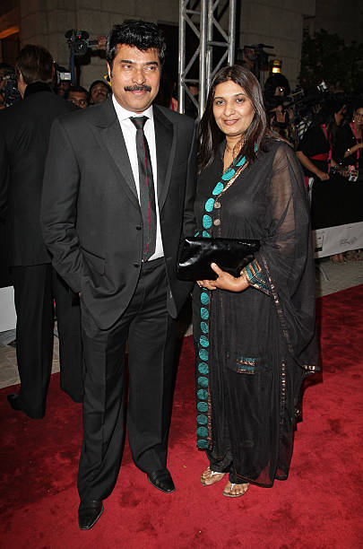
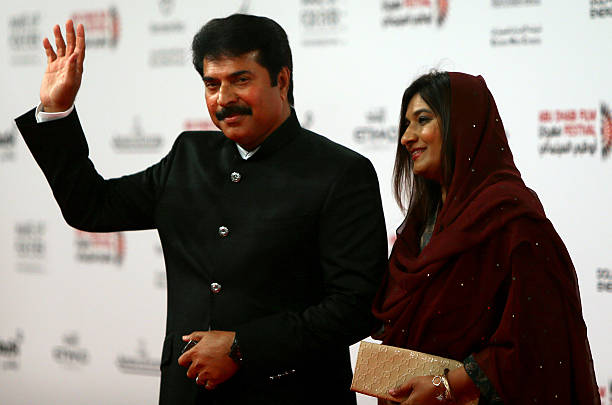
 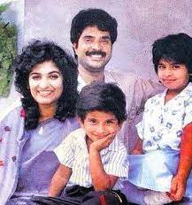
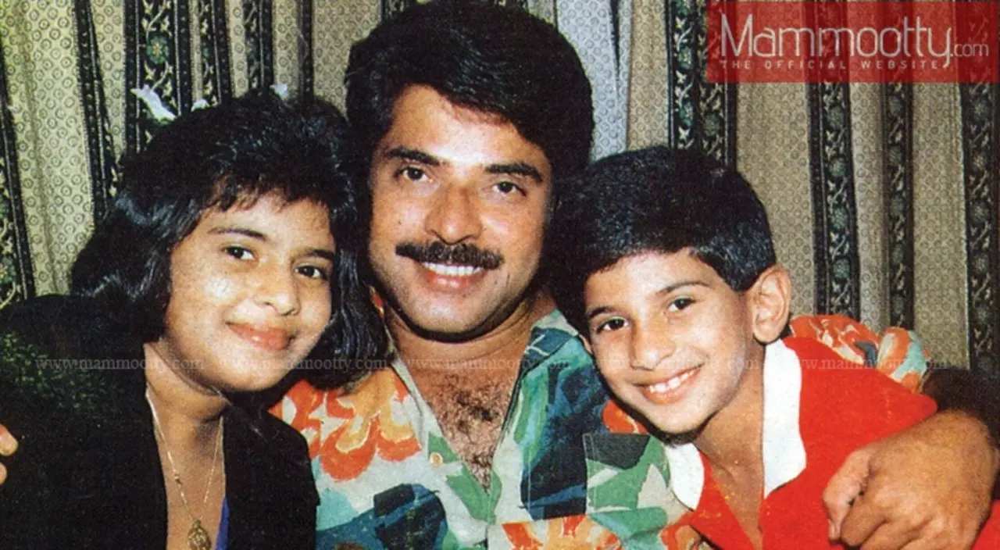
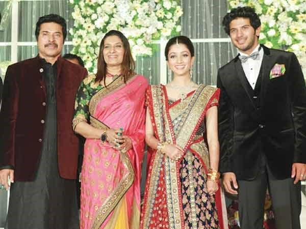
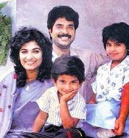
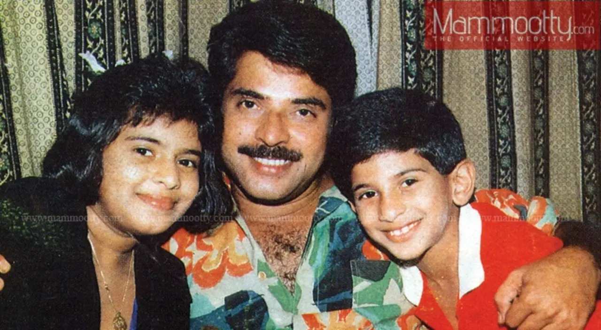
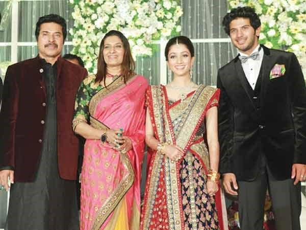
 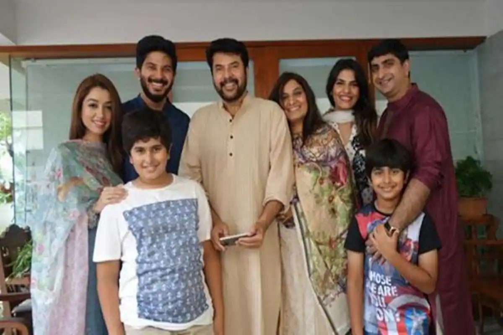
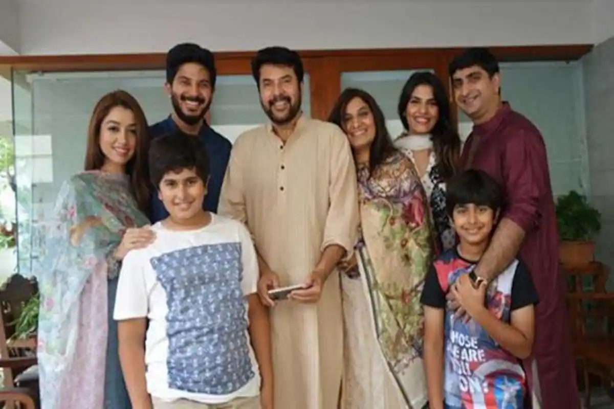

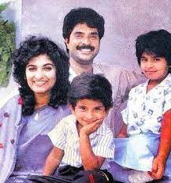
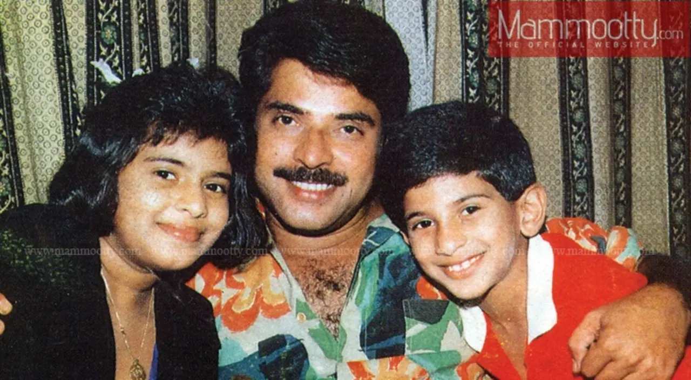
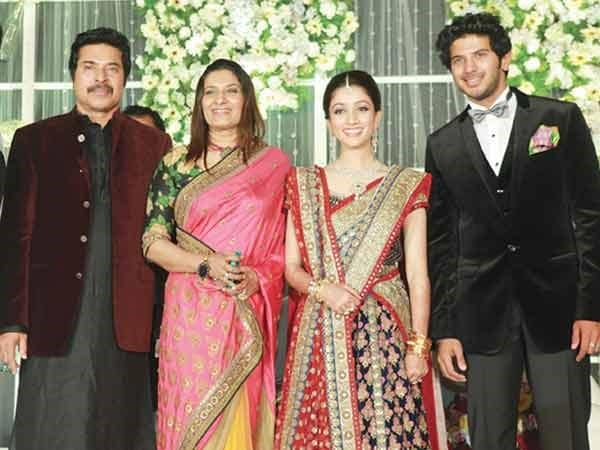
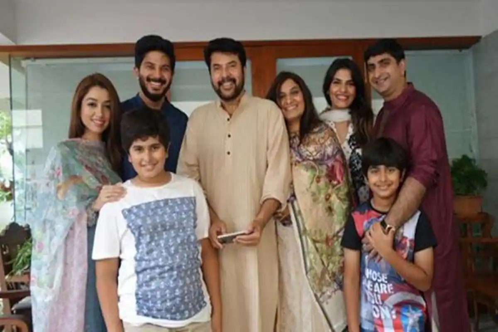
Sulfath Kutty is the wife of legendary Malayalam actor Mammootty. The couple got married in 1979 and have maintained a strong and loving relationship ever since. Sulfath is known for her grace, supportiveness, and simplicity despite her husband's stardom. She has been a constant pillar of strength and stays away from the media spotlight.
 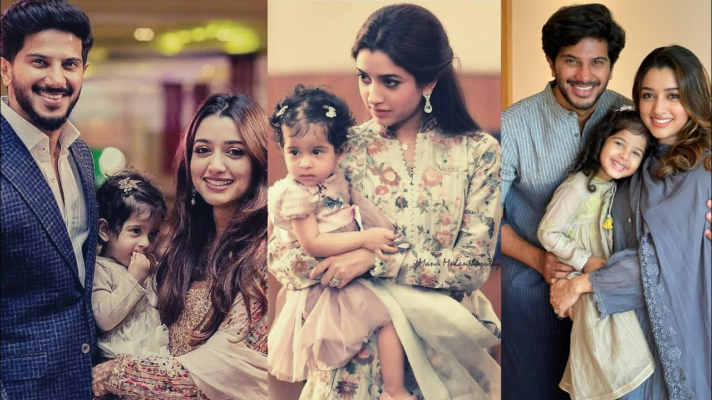
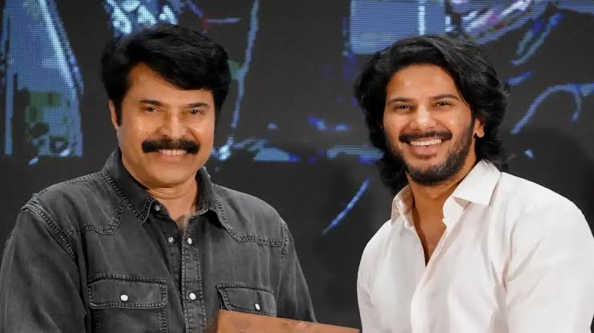
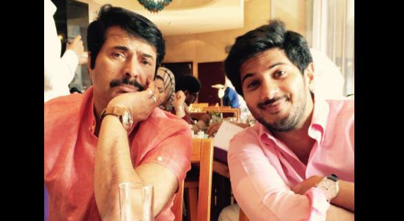
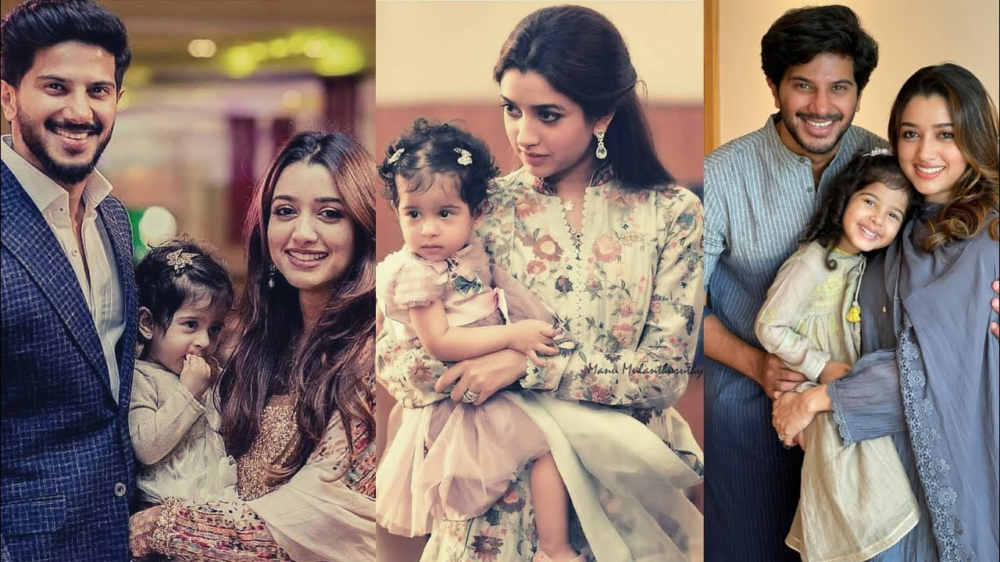
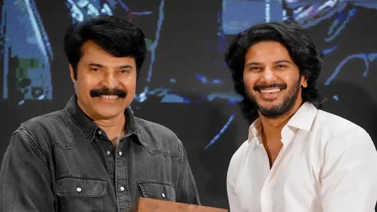
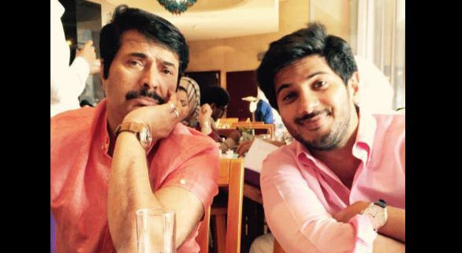